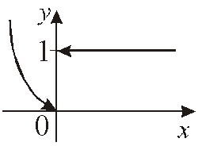

13.1.1. Непрерывность функции в точке
Пусть функция  определена на
множестве
определена на
множестве  и пусть точка
и пусть точка  . Функция называется
непрерывной в точке
. Функция называется
непрерывной в точке  , если функция
определена в точке , существует предел и при этом
, если функция
определена в точке , существует предел и при этом
определена на
множестве и пусть точка . Функция называется
непрерывной в точке , если функция
определена в точке , существует предел и при этом Иначе
1) ,
2) ,
3)  .
.
.1˚.При нарушении любого из трех условий функция
называется разрывной в точке .
.2˚.Поскольку первое
определение непрерывности может быть записано в виде то
есть операция вычисления непрерывной в точке функции
и операция вычисления предела
перестановочны.
функции
и операция вычисления предела
перестановочны.1˚..
– непрерывна в любой точке
по определению.
по определению.2˚.
 непрерывна в любой точке , разрывна в точке 0 (нарушено
второе условие определения).
непрерывна в любой точке , разрывна в точке 0 (нарушено
второе условие определения).
Рассмотрим точку функции и точку .
функции и точку .Величина называется приращением
аргумента, .
Величина называется приращением
функции, соответствующим данному приращению аргумента .
Функция называется непрерывной
в точке , если функция определена в точке и при этом
называется непрерывной
в точке , если функция определена в точке и при этом Вариант формулировки: функция непрерывна в точке, если
бесконечно малым приращениям аргумента соответствуют бесконечно малые
приращения функции.
Показать, что первое и второе определения непрерывности
равносильны.
Используя арифметические свойства предела, получаем
По определению приращения , поэтому
и тем самым
или
Функция называется непрерывной
в точке , если функция определена в точке , существуют односторонние пределы , и
при этом  .
.
называется непрерывной
в точке , если функция определена в точке , существуют односторонние пределы , и
при этом .Все три определения непрерывности равносильны.
Используется также понятие односторонней непрерывности.
Функция называется непрерывной
в точке слева, если функция определена в
точке и существует односторонний
предел и при этом .
называется непрерывной
в точке слева, если функция определена в
точке и существует односторонний
предел и при этом .Функция называется непрерывной
в точке справа, если функция определена
в точке и существует односторонний предел и при этом.
называется непрерывной
в точке справа, если функция определена
в точке и существует односторонний предел и при этом. Используя понятие односторонней непрерывности, можно сказать,
что функция непрерывна в точке , если она
непрерывна в ней справа и слева.
, если она
непрерывна в ней справа и слева.